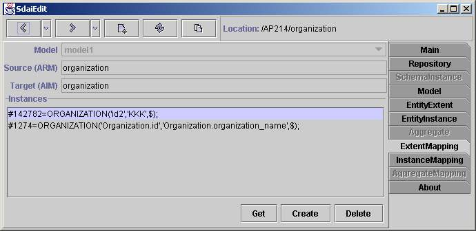

Extent Mapping page

Here is shown data related with one entity data type pair (ARM and AIM).Data
can be merged from several models (in the case that you are working on schema
instance instead of model). At the top are list of models in the combobox,
ARM entity data type name and AIM entity data type name. Current modelin
combo box will change automatically to instance model when you select instance.
In the list below are all instances which fits with both ARM and AIM entity
data types mapping and are in these models. If you want to create instance
of thistype you need to select model in which you will create it and press
'Create'button. If you want to delete instance you need to select one and
press 'Delete'button. 'Get' button is for further editing operations. If
you select instanceand press 'Get' than selected instance will be placed
in sdai clipboard andyou will be able to use set operation later. More for
editing see instance mapping.